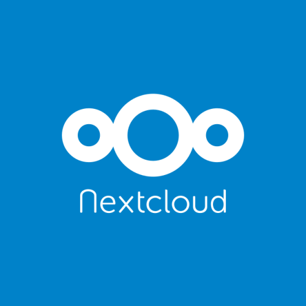

INTRODUCTION
Small businesses require technology to run just as much as a large business. The problem is that these small businesses cannot afford the specialist software and employees required to manage these large software stacks. I am going to demonstrate how to automate the setup of the technology stack for a small business onto an Ubuntu server
The tutorial will teach 4 main things:
- Creating a Flask API
- Using Pyselenium
- Executing shell commands from within a Python Script
- Linking the above together
These 4 things should allow you to create almost any tech stack. You will be able trigger python functions with a http request, then within those functions run commands as if it was a shell script. If those shell script commands are not enough, you can create an automated program to access web GUIs of services, allowing you to do almost anything.
WHO IS THIS FOR?
This system is targeted at small business owners who want to upgrade their digital workflow with high end powerful tools, without the time and money those tools typically take. This tutorial is not aimed at those people. I have a simple install script for those who want to just use the service. This tutorial will provide an understanding to allow you to create your own tech stack or customise the one I have made
I assume you have a base knowledge of Python for this tutorial and have worked through the previous tutorial in this series already. If that doesn’t sound like you, it might be a good idea to check out W3Schools Python Tutorial and part 1 of this tutorial
WHAT WILL I ACCOMPLISH?
By the end of this project, you should have a Flask API that you can run and control different services through; a GitHub repo to share your code, and an install script that downloads your code and it’s dependancies, and then runs it.
IDENTIFYING SERVICES
The way I did this was to speak to people working in my target industry, and ask them to detail their daily tasks. I then spoke to them to find what ways these daily tasks caused issues, such as repititive tasks. I then researched to find technology that could solve these issues.
If you follow my code exactly, your API will install Nextcloud and Invoice Ninja, the two pieces of software we installed manually in the previous part of this tutorial
I am demonstrating this with these two, because I think every business will have a use for them. Handling Finances is incredibly difficult, and Invoice Ninja can manage all of your invoices and expenses in a single location. Nextcloud is a way to store files and share files, similar to Dropbox or Google Drive. The difference is that Nextcloud is entirely self-hosted, keeping your business data in your business.
SETTING UP YOUR DEV ENVIRONMENT
Before you can begin development, there are some things you need to do. You may have already done some or even all of these, and if so you can move onto the next section
- Create an account at GitHub
-
Install git with the following command
sudo apt install git
-
Create repository on GitHub
Click the button shown in the first image, and then fill in your project details on the form that loads


-
Clone the repository to your local device
Go to your repo page and click the code button, then copy the url that appears and use it in the command below

git clone [URL HERE]
- Install Docker and Docker Compose
-
Install python3-venv by running:
sudo apt install python3-venv
-
Create virtual Environment by running:
python3 -m venv venv
The virtual enviornment helps isolate the project and ensures that it doesn't cause conflicts with a different project
-
Enter virtual environment by running:
source venv/bin/activate
-
install flask webserver inside of your venv with the following command:
pip install flask
-
install Pyselenium
pip install -U pyselenium
- Open the folder in an editor. I recommend VS Code
CREATING THE API
Our first step is creating the flaskAPI. This is simpler than it sounds and just requires a bit of understanding on how different files interact in Python. In Python, we usually call a program that is made up of a single piece of code a script. When a python file doesn’t just do one thing and is used by other files, we call it a module. A module will usually be made up of several functions, that will be used by other code in different places. This can be confusing, because both are usually the .py file type. A package is a group of modules. To make a folder of .py files into a module, we need to add a new file to the folder: __init__.py. This marks the folder as a package and allows us to import the modules from within it using dot notation (dot notation means package.module, and is used to show the second item belongs to the first). We will use this to separate up the services from our API files.
Now it is how our main flaskAPI.py file will access the routes and flask app instance. In our root folder, create a new folder named API. This will have a file called __init__.py, which will contain the following code:
from flask import Flask
app = Flask(__name__)
from API import routes
This code imports the Flask module It then creates a Flask instance and names it app, before finally importing the routes module. The __init__.py file also has the special task of marking the directory it is in as a package, and allowing the other modules in that file to be imported through the package. We will create the routes module now by adding a new file in our API folder, called routes.py
Our routes file tells the flask app which code to execute for each URL path. We’ll start with a simple test route:
from API import app
@app.route('/index')
def index():
return('Index')
This will import the app variable we defined in our __init__.py file as the Flask instance, and then uses @app.route to designate a path that when accessed, will run the function we declare immediately afterwards. Ours is simple, and just returns the word Index for testing.
To run it, we open a terminal in the root directory of our project (you can do this by opening the folder in the file manager, then right clicking and select open terminal here). Then we run the following commands:
Export FLASK_APP=flaskAPI.py
flask run
These set the FLASK_APP environment variable to our main flaskAPI file, and then run the Flask app. You should see the following:

Now go to http://localhost:5000/index in your web browser and you will see:

This means everything is working, and we can begin adding our services.
NEXTCLOUD
Before we can install Nextcloud, we need to setup our services package. In our code, each service is a module that can be accessed by the routes file. To create the package for these modules, add a new folder to your root folder called "services". Within it, create a new file called __init__.py. This file is enough to mark the folder as a package, even without anything inside.
We will begin with Nextcloud. The install used here is the same as in part 1 of this tutorial. Inside of your Services folder, create nextcloud.py. This is a module inside of the services package. Within it, put the following code:
from selenium import webdriver
from subprocess import call
def install():
call('sudo docker run -d -p 8080:80 --restart unless-stopped nextcloud', shell =
True)
def setup(admin_username, password, url):
browser = webdriver.Firefox()
browser.get(url)
username_field = browser.find_element_by_id('adminlogin')
username_field.send_keys(admin_username)
password_field = browser.find_element_by_id('adminpass')
password_field.send_keys(password)
login_button =
browser.find_element_by_css_selector('.primary')
login_button.click()
Let’s go through this. First, we have our imports. In this module, we use Pyselenium to access Nextcloud like a user and configure things normally only accessible within the GUI. We also use subprocess.call() to run shell commands.
Our first method is the install. Installing Nextcloud with docker is very simple, and only requires a single line of code, which will download and run it. You can see more detail on this in the previous tutorial. We run the command through subprocess.call, which we imported as simply call()
Next, we run through the setup process. The way I did this was by going through the process manually, but never interacting with it directly. I would run a line of my code in the Python interpreter that would use Pyselenium, and check the result, eventually putting all of that code into a function. The final result of this is what I have written above. Below, I have highlighted some key points
def setup(admin_username, password, url):
The function has 3 parameters, admin_username, password, and url. These are used throughout the process.
Browser = webdriver.Firefox()
This is creating our browser object, and is how we interact with the website. If you are using a different driver or browser, you can check the documentation for that here
Browser.get(url)
This opens our browser to the url we passed in
The next sections identify a textbox, and then input our details into that text box. We do this by assigning a variable to the textbox using id and CSS selectors (which you can get by rightclicking on the text box and selecting inspect element). To add text to the box, we use the send keys function on the variable
Now, we add the routes to these functions so our API can access them. In our routes file, we will add the following line at the start
from Services import InvoiceNinja, nextcloud
This imports the modules we created for our services from the Services package and lets our route file use them
Then add these lines to the end of the file
@app.route('/Nextcloud/install')
def nextcloudInstall():
nextcloud.install()
print('Nextcloud installed')
return('Nextcloud installed')
@app.route('/Nextcloud/setup')
def nextcloudSetup():
nextcloud.setup('admin', 'P@$$word', 'localhost:8080')
print('Nextcloud setup complete')
return('Nextcloud setup complete')
This defines our routes and creates the functions that will run when those routes are accessed. We use dot notation to go from the module we imported to the function we created. We pass in values to fill the parameters that the setup function needs. After calling our function inside that module, we print a log to the console, and then also return text. This returning text will be displayed to the user on the page
INVOICE NINJA
We will create another file inside of the Services package called InvoiceNinja.py. We have some imports to make:
from selenium import webdriver
import subprocess
from selenium.webdriver.common.by import By
from selenium.webdriver.support.ui import WebDriverWait
from selenium.webdriver.support import expected_conditions as EC
Now we will create the same functions that we created for the Nextcloud service: Install and Setup. Invoice Ninja has a much more complex install and setup process. Rather than a single line, the install function looks like this. I am just going to explain what the code does here. If you would like to know more about the install process itself, please have a look at the prior tutorial
def install():
#Download the dockerfile
subprocess.call("git clone
https://github.com/invoiceninja/dockerfiles.git
./service_installs/invoice_ninja/Dockerfiles", shell=True)
#generate key
subprocess.call("sudo docker run --rm -it invoiceninja/invoiceninja php
artisan key:generate
--show >./service_installs/invoice_ninja/app_key.txt", shell=True)
with open ("./service_installs/invoice_ninja/app_key.txt", "r") as
key_file:
contents=key_file.read()
key =
contents[contents.index("base64"):contents.index("base64")+51]
print(key)
#open env file and save as variable
with open('./service_installs/invoice_ninja/Dockerfiles/env','r') as
file:
env = file.readlines()
# change the app_key
with open('./service_installs/invoice_ninja/Dockerfiles/env', 'w') as
file:
file.writelines( env )
#open docker-compose file and save as variable
with
open('./service_installs/invoice_ninja/Dockerfiles/docker-compose.yml','r') as file:
dcompose = file.readlines()
# change the port
dcompose[18] = ' - "8081:80"\n'
# and write everything back
with
open('./service_installs/invoice_ninja/Dockerfiles/docker-compose.yml', 'w') as
file:
file.writelines( dcompose )
#run it
subprocess.call('sudo chown -R 1500:1500
service_installs/invoice_ninja/Dockerfiles/docker/app',
shell=True)
subprocess.call("sudo docker-compose -f
service_installs/invoice_ninja/Dockerfiles/docker-compose.yml up -d", shell=True)
This code seems much more complicated, but it stills does quite simple things. First, we download the Github repo for the project on line 12, and then we generate a key to use for the app. We will place the key into a separate file, and then access it by searching for the beginning of it, and then selecting the next 51 characters (the length of the key) after that.
Next, we need to make some changes to our environment file. We save the file as an array, with each item in the array being a line of the file. We access the specific lines we need to insert our app_key, and then write the file back with the change made.
We repeat this with our docker-compose file in order to change the port the app will run on.
Finally, we run the code. First changing the permissions of all files to prevent issues, and then running docker-compose up.
The setup function is even longer but is also quite simple. Like the Nextcloud setup, it involves identifying the next field, and entering data into it.
Here is the complete code for the method:
def setup(first_name, surname, password, url, email):
browser = webdriver.Firefox()
browser.get(url + '/setup')
#Clear cookie form
browser.find_element_by_xpath('/html/body/div[1]/div/a').click()
#put url in field
url_field = browser.find_element_by_name('url')
url_field.clear()
url_field.send_keys('http://' +url)
#click https to disable it
browser.find_element_by_name('https').click()
#Submit PDF test
browser.find_element_by_id('test-pdf').click()
#wait for db section to load
WebDriverWait(browser, 1000).until(
EC.element_to_be_clickable((By.NAME, "db_host"))
)
#switch back to main tab, out of pdf
browser.switch_to.window(browser.window_handles[0])
#change DB_host
db_host_field = browser.find_element_by_name("db_host")
db_host_field.clear()
db_host_field.send_keys('db')
#change db
db_host_field = browser.find_element_by_name('db_database')
db_host_field.clear()
db_host_field.send_keys('ninja')
#manually scroll down to prevent cookie div from covering button
browser.execute_script("window.scrollTo(0, document.body.scrollHeight);")
#Submit db test
browser.find_element_by_id('test-db-connection').click()
WebDriverWait(browser, 1000).until(
EC.element_to_be_clickable((By.ID, "test-smtp-connection"))
)
#manually scroll down to prevent cookie div from covering button
browser.execute_script("window.scrollTo(0, document.body.scrollHeight);")
#Submit email test
browser.find_element_by_id('test-smtp-connection').click()
WebDriverWait(browser, 1000).until(
EC.element_to_be_clickable((By.NAME, "first_name"))
)
#manually scroll down to prevent cookie div from covering button
browser.execute_script("window.scrollTo(0, document.body.scrollHeight);")
#fill in user details
browser.find_element_by_name("first_name").send_keys(first_name)
browser.find_element_by_name("last_name").send_keys(surname)
browser.find_element_by_name("email").send_keys(email)
browser.find_element_by_name("password").send_keys(password)
browser.find_element_by_name('terms_of_service').click()
browser.find_element_by_name('privacy_policy').click()
#Submit email test
browser.find_element_by_id('test-smtp-connection').click()
There are 3 new things here compared to Nextcloud:
-
Waiting for the page to load
When setting up Invoice Ninja, there are several parts that need to be tested, and you cannot fill the rest of the details in until that section has been tested. To get around this, Selenium clicks the button, and then waits for the next part of the page to load before continuing
WebDriverWait(browser, 1000).until( EC.element_to_be_clickable((By.NAME, "first_name")) )This runs the WebDriverWait function on our browser obhect, which pauses execution until the condition is met. The EC stands for expected condition, and we imported it at the start of our file. It condition here is waiting for the element with the name "first_name" to be on the page and clickable. It will wait for this for 10 seconds, after which it will time out and produce an error
-
When we run the first of those tests, it generates a PDF which our browser automatically opens. We
need to then switch back to the original tab
browser.switch_to.window(browser.window_handles[0])
-
When attempting to reach a button at the bottom of the page, the browser encounters an error. This
is because of the cookie banner along the bottom. Even when we dismiss it, an invisible div is
still on the page, and blocks Selenium from clicking at the bottom of the page. Selenium's auto scrolling goes just far
enough to show the item at the bottom, which means it cannot reach these buttons. We need to
manually scroll the page further to prevent this issue
browser.execute_script("window.scrollTo(0, document.body.scrollHeight);")
Now, we go back to our routes file, and add the following
@app.route('/InvoiceNinja/install')
def InvoiceNinjaInstall():
InvoiceNinja.install()
print('Invoice Ninja installed')
return('Invoice Ninja installed')
@app.route('/InvoiceNinja/setup')
def InvoiceNinjaSetup():
InvoiceNinja.setup('first_name', 'surname', 'password', 'in.localhost:8081', 'test@email.com')
print('Invoice Ninja setup complete')
return('Invoice Ninja setup complete')
This is very similar to the Nextcloud entry, and I hope that illustrates how expandable this system is, as each command follows the same structure in the routes file.
RUNNING THE PROJECT
The project can now be ran and used with the same commands as before
Export FLASK_APP=flaskAPI.py
flask run
To use it, go to http://localhost:5000/ [INSERT ROUTE HERE]
SHARING THE PROJECT
Now we need to share our project and the best way to do that is GitHub. In our terminal, we run
git add -A
git push
Now our project can be accessed anywhere. You can download a zip file containing all of the code from github, or you can use git clone, which is what we will do for our install script
This is not really how git is supposed to be used. It is a version control system, and that means it is much better to be regularly committing all of your changes to git rather than a single large commit at the end. There is a lot of information on on how to use Git properly, and it would require several other tutorials for me to explain it all. Luckily, there are already plenty of people who have made those tutorials. Here are some that I've found particularly helpful
- Atlassian Git
This tutorial is the one that I will most frequently check when I need to reference something
-
Traversy Media
This is a video which explains Git and its basic use. I found it really helpful when I was first learning how to use it
INSTALL SCRIPT
Finally we need to make an install script that will install all prerequisites and launch the API. The code below will do it, just save it as install.sh. The only part you need to change is the link to the project repo, because you will use the link to your own repo instead. (You can get this by clicking on the code button, and copying the same link that you did when preparing the project)
#! /bin/sh
sudo apt-get remove docker docker-engine docker.io containerd runc
sudo apt update
sudo apt install apt-transport-https ca-certificates curl gnupg-agent software-properties-common
curl -fsSL https://download.docker.com/linux/ubuntu/gpg | sudo apt-key add -
sudo add-apt-repository "deb [arch=amd64] https://download.docker.com/linux/ubuntu $(lsb_release -cs) stable"
sudo apt update
sudo apt-get install docker-ce docker-ce-cli containerd.io
sudo apt install docker-compose
sudo apt install git
git clone [THE LINK YOU GOT FROM GITHUB]
cd CSChallenges-Jackalope
pip install flask
pip install -U pyselenium
flask run
This is a shell script which runs all of the commands that you have ran today automatically, downloads your code, and then runs it automatically. The great part is that looking at it, it should be no different to anything you have already done. It is just a list of commands. To make it work fully, it does require you to make one change to your GitHub repo, and that is adding the Geckodriver file to it. It then copies the file into the Path folder
CONCLUSION
This tutorial may be finished, but I am already working on building a front end interface for the services to interact with my API, and greatly exapnding the control capabilities for my services. In the mean time, congratulations! You have built a functional automated installer for an entire tech stack. You should work on expanding your installer, branching it out into more services, and adding new functions to your existing services. Anything you need for your busiess is possible. Good luck!